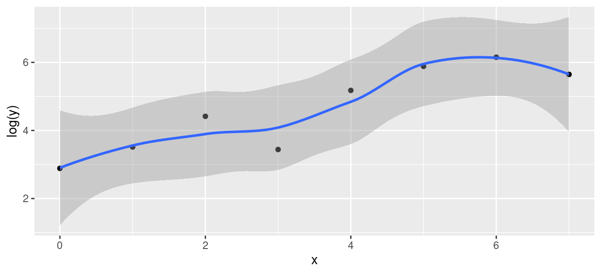

[conflicted] Will prefer dplyr::select over any other package.
A regression with one \(x\)
13 children, measure average total sleep time (ATST, mins) and age (years) for each. See if ATST depends on age. Data in sleep.txt, ATST then age. Read in data:
Rows: 13 Columns: 2
── Column specification ────────────────────────────────────────────────────────
Delimiter: " "
dbl (2): atst, age
ℹ Use `spec()` to retrieve the full column specification for this data.
ℹ Specify the column types or set `show_col_types = FALSE` to quiet this message.
Check data
summary(sleep)
atst age
Min. :461.8 Min. : 4.400
1st Qu.:491.1 1st Qu.: 7.200
Median :528.3 Median : 8.900
Mean :519.3 Mean : 9.058
3rd Qu.:532.5 3rd Qu.:11.100
Max. :586.0 Max. :14.000
Make scatter plot of ATST (response) vs. age (explanatory) using code overleaf:
The scatterplot
ggplot(sleep, aes(x = age, y = atst)) +geom_point()
Correlation
Measures how well a straight line fits the data:
with(sleep, cor(atst, age))
[1] -0.9515469
\(1\) is perfect upward trend, \(-1\) is perfect downward trend, 0 is no trend.
This one close to perfect downward trend.
Can do correlations of all pairs of variables:
cor(sleep)
atst age
atst 1.0000000 -0.9515469
age -0.9515469 1.0000000
Lowess curve
Sometimes nice to guide the eye: is the trend straight, or not?
Idea: lowess curve. “Locally weighted least squares”, not affected by outliers, not constrained to be linear.
Lowess is a guide: even if straight line appropriate, may wiggle/bend a little. Looking for serious problems with linearity.
Add lowess curve to plot using geom_smooth:
Plot with lowess curve
ggplot(sleep, aes(x = age, y = atst)) +geom_point() +geom_smooth()
`geom_smooth()` using method = 'loess' and formula = 'y ~ x'
The regression
Scatterplot shows no obvious curve, and a pretty clear downward trend. So we can run the regression:
sleep.1<-lm(atst ~ age, data = sleep)
The output
summary(sleep.1)
Call:
lm(formula = atst ~ age, data = sleep)
Residuals:
Min 1Q Median 3Q Max
-23.011 -9.365 2.372 6.770 20.411
Coefficients:
Estimate Std. Error t value Pr(>|t|)
(Intercept) 646.483 12.918 50.05 2.49e-14 ***
age -14.041 1.368 -10.26 5.70e-07 ***
---
Signif. codes:
0 '***' 0.001 '**' 0.01 '*' 0.05 '.' 0.1 ' ' 1
Residual standard error: 13.15 on 11 degrees of freedom
Multiple R-squared: 0.9054, Adjusted R-squared: 0.8968
F-statistic: 105.3 on 1 and 11 DF, p-value: 5.7e-07
Conclusions
The relationship appears to be a straight line, with a downward trend.
\(F\)-tests for model as a whole and \(t\)-test for slope (same) both confirm this (P-value \(5.7\times 10^{-7}=0.00000057\)).
Slope is \(-14\), so a 1-year increase in age goes with a 14-minute decrease in ATST on average.
R-squared is correlation squared (when one \(x\) anyway), between 0 and 1 (1 good, 0 bad).
Here R-squared is 0.9054, pleasantly high.
Doing things with the regression output
Output from regression (and eg. \(t\)-test) is all right to look at, but hard to extract and re-use information from.
Package broom extracts info from model output in way that can be used in pipe (later):
tidy(sleep.1)
# A tibble: 2 × 5
term estimate std.error statistic p.value
<chr> <dbl> <dbl> <dbl> <dbl>
1 (Intercept) 646. 12.9 50.0 2.49e-14
2 age -14.0 1.37 -10.3 5.70e- 7
Useful for plotting residuals against an \(x\)-variable.
CI for mean response and prediction intervals
Once useful regression exists, use it for prediction:
To get a single number for prediction at a given \(x\), substitute into regression equation, eg. age 10: predicted ATST is \(646.48-14.04(10)=506\) minutes.
To express uncertainty of this prediction:
CI for mean response expresses uncertainty about mean ATST for all children aged 10, based on data.
Prediction interval expresses uncertainty about predicted ATST for a new child aged 10 whose ATST not known. More uncertain.
Also do above for a child aged 5.
The marginaleffects package 1/2
To get predictions for specific values, set up a dataframe with those values first:
new <-datagrid(model = sleep.1, age =c(10, 5))new
atst age
1 519.3038 10
2 519.3038 5
Any variables in the dataframe that you don’t specify are set to their mean values (quantitative) or most common category (categorical).
The marginaleffects package 2/2
Then feed into newdata in predictions. This contains a lot of columns, so you probably want only to display the ones you care about:
Rows: 10 Columns: 2
── Column specification ────────────────────────────────────
Delimiter: " "
dbl (2): xx, yy
ℹ Use `spec()` to retrieve the full column specification for this data.
ℹ Specify the column types or set `show_col_types = FALSE` to quiet this message.
Scatterplot
ggplot(curvy, aes(x = xx, y = yy)) +geom_point()
Regression line, anyway
curvy.1<-lm(yy ~ xx, data = curvy)summary(curvy.1)
Call:
lm(formula = yy ~ xx, data = curvy)
Residuals:
Min 1Q Median 3Q Max
-3.582 -2.204 0.000 1.514 3.509
Coefficients:
Estimate Std. Error t value Pr(>|t|)
(Intercept) 7.5818 1.5616 4.855 0.00126 **
xx 0.9818 0.2925 3.356 0.00998 **
---
Signif. codes:
0 '***' 0.001 '**' 0.01 '*' 0.05 '.' 0.1 ' ' 1
Residual standard error: 2.657 on 8 degrees of freedom
Multiple R-squared: 0.5848, Adjusted R-squared: 0.5329
F-statistic: 11.27 on 1 and 8 DF, p-value: 0.009984
Residual plot
ggplot(curvy.1, aes(x = .fitted, y = .resid)) +geom_point()
No good: fixing it up
Residual plot has curve: middle residuals positive, high and low ones negative. Bad.
Fitting a curve would be better. Try this:
curvy.2<-lm(yy ~ xx +I(xx^2), data = curvy)
Adding xx-squared term, to allow for curve.
Another way to do same thing: specify how model changes:
Seems to be faster-than-linear growth, maybe exponential growth.
Scatterplot: faster than linear growth
ggplot(madeup, aes(x = x, y = y)) +geom_point() +geom_smooth()
`geom_smooth()` using method = 'loess' and formula = 'y ~
x'
Running Box-Cox
library(MASS) first.
Feed boxcox a model formula with a squiggle in it, such as you would use for lm.
Output: a graph (next page):
boxcox(y ~ x, data = madeup)
The Box-Cox output
Comments
\(\lambda\) (lambda) is the power by which you should transform \(y\) to get the relationship straight (straighter). Power 0 is “take logs”
Middle dotted line marks best single value of \(\lambda\) (here about 0.1).
Outer dotted lines mark 95% CI for \(\lambda\), here \(-0.3\) to 0.7, approx. (Rather uncertain about best transformation.)
Any power transformation within the CI supported by data. In this case, log (\(\lambda=0\)) and square root (\(\lambda=0.5\)) good, but no transformation (\(\lambda=1\)) not.
Pick a “round-number” value of \(\lambda\) like \(2,1,0.5,0,-0.5,-1\). Here 0 and 0.5 good values to pick.
Did transformation straighten things?
Plot transformed \(y\) against \(x\). Here, log:
ggplot(madeup, aes(x = x, y =log(y))) +geom_point() +geom_smooth()

Looks much straighter.
Regression with transformed \(y\)
madeup.1<-lm(log(y) ~ x, data = madeup)glance(madeup.1)
Rows: 465 Columns: 5
── Column specification ────────────────────────────────────
Delimiter: " "
dbl (5): subjno, timedrs, phyheal, menheal, stress
ℹ Use `spec()` to retrieve the full column specification for this data.
ℹ Specify the column types or set `show_col_types = FALSE` to quiet this message.
Call:
lm(formula = timedrs ~ phyheal + menheal + stress, data = visits)
Residuals:
Min 1Q Median 3Q Max
-14.792 -4.353 -1.815 0.902 65.886
Coefficients:
Estimate Std. Error t value Pr(>|t|)
(Intercept) -3.704848 1.124195 -3.296 0.001058 **
phyheal 1.786948 0.221074 8.083 5.6e-15 ***
menheal -0.009666 0.129029 -0.075 0.940318
stress 0.013615 0.003612 3.769 0.000185 ***
---
Signif. codes:
0 '***' 0.001 '**' 0.01 '*' 0.05 '.' 0.1 ' ' 1
Residual standard error: 9.708 on 461 degrees of freedom
Multiple R-squared: 0.2188, Adjusted R-squared: 0.2137
F-statistic: 43.03 on 3 and 461 DF, p-value: < 2.2e-16
The slopes
Model as a whole strongly significant even though R-sq not very big (lots of data). At least one of the \(x\)’s predicts timedrs.
The physical health and stress variables definitely help to predict the number of visits, but with those in the model we don’t need menheal. However, look at prediction of timedrs from menheal by itself:
Just menheal
visits.2<-lm(timedrs ~ menheal, data = visits)summary(visits.2)
Call:
lm(formula = timedrs ~ menheal, data = visits)
Residuals:
Min 1Q Median 3Q Max
-13.826 -5.150 -2.818 1.177 72.513
Coefficients:
Estimate Std. Error t value Pr(>|t|)
(Intercept) 3.8159 0.8702 4.385 1.44e-05 ***
menheal 0.6672 0.1173 5.688 2.28e-08 ***
---
Signif. codes:
0 '***' 0.001 '**' 0.01 '*' 0.05 '.' 0.1 ' ' 1
Residual standard error: 10.6 on 463 degrees of freedom
Multiple R-squared: 0.06532, Adjusted R-squared: 0.0633
F-statistic: 32.35 on 1 and 463 DF, p-value: 2.279e-08
menheal by itself
menheal by itself does significantly help to predict timedrs.
But the R-sq is much less (6.5% vs. 22%).
So other two variables do a better job of prediction.
With those variables in the regression (phyheal and stress), don’t need menhealas well.
Is there trend in size of residuals (fan-out)? Plot absolute value of residual against fitted value:
ggplot(visits.1, aes(x = .fitted, y =abs(.resid))) +geom_point() +geom_smooth()
Comments
On the normal quantile plot:
highest (most positive) residuals are way too high
distribution of residuals skewed to right (not normal at all)
On plot of absolute residuals:
size of residuals getting bigger as fitted values increase
predictions getting more variable as fitted values increase
that is, predictions getting less accurate as fitted values increase, but predictions should be equally accurate all way along.
Both indicate problems with regression, of kind that transformation of response often fixes: that is, predict function of response timedrs instead of timedrs itself.
Box-Cox transformations
Taking log of timedrs and having it work: lucky guess. How to find good transformation?
Box-Cox again.
Extra problem: some of timedrs values are 0, but Box-Cox expects all +. Note response for boxcox:
boxcox(timedrs +1~ phyheal + menheal + stress, data = visits)
ggplot(visits.3, aes(x = .fitted, y =abs(.resid))) +geom_point() +geom_smooth()
Comments
Residuals vs. fitted looks a lot more random.
Normal quantile plot looks a lot more normal (though still a little right-skewness)
Absolute residuals: not so much trend (though still some).
Not perfect, but much improved.
Testing more than one \(x\) at once
The \(t\)-tests test only whether one variable could be taken out of the regression you’re looking at.
To test significance of more than one variable at once, fit model with and without variables
then use anova to compare fit of models:
visits.5<-lm(log(timedrs +1) ~ phyheal + menheal + stress, data = visits)visits.6<-lm(log(timedrs +1) ~ stress, data = visits)
Results of tests
anova(visits.6, visits.5)
Analysis of Variance Table
Model 1: log(timedrs + 1) ~ stress
Model 2: log(timedrs + 1) ~ phyheal + menheal + stress
Res.Df RSS Df Sum of Sq F Pr(>F)
1 463 371.47
2 461 268.01 2 103.46 88.984 < 2.2e-16 ***
---
Signif. codes:
0 '***' 0.001 '**' 0.01 '*' 0.05 '.' 0.1 ' ' 1
Models don’t fit equally well, so bigger one fits better.
Or “taking both variables out makes the fit worse, so don’t do it”.
Taking out those \(x\)’s is a mistake. Or putting them in is a good idea.
The punting data
Data set punting.txt contains 4 variables for 13 right-footed football kickers (punters): left leg and right leg strength (lbs), distance punted (ft), another variable called “fred”. Predict punting distance from other variables:
── Column specification ────────────────────────────────────
cols(
left = col_double(),
right = col_double(),
punt = col_double(),
fred = col_double()
)
\(t\)-tests only say that you could take any one of the \(x\)’s out without damaging the fit; doesn’t matter which one.
Explanation: look at correlations.
The correlations
cor(punting)
left right punt fred
left 1.0000000 0.8957224 0.8117368 0.9722632
right 0.8957224 1.0000000 0.8805469 0.9728784
punt 0.8117368 0.8805469 1.0000000 0.8679507
fred 0.9722632 0.9728784 0.8679507 1.0000000
All correlations are high: \(x\)’s with punt (good) and with each other (bad, at least confusing).
What to do? Probably do just as well to pick one variable, say right since kickers are right-footed.
Just right
punting.2<-lm(punt ~ right, data = punting)anova(punting.2, punting.1)
Analysis of Variance Table
Model 1: punt ~ right
Model 2: punt ~ left + right + fred
Res.Df RSS Df Sum of Sq F Pr(>F)
1 11 1962.5
2 9 1938.2 2 24.263 0.0563 0.9456
No significant loss by dropping other two variables.
Comparing R-squareds
summary(punting.1)$r.squared
[1] 0.7781401
summary(punting.2)$r.squared
[1] 0.7753629
Basically no difference. In regression (over), right significant:
Regression results
tidy(punting.2)
# A tibble: 2 × 5
term estimate std.error statistic p.value
<chr> <dbl> <dbl> <dbl> <dbl>
1 (Intercept) -3.69 25.3 -0.146 0.886
2 right 1.04 0.169 6.16 0.0000709
But
Maybe we got the form of the relationship with left wrong.
Check: plot residuals from previous regression (without left) against left.
Residuals here are “punting distance adjusted for right leg strength”.
If there is some kind of relationship with left, we should include in model.
Plot of residuals against original variable: augment from broom.


Comments
Age 10 closer to centre of data, so intervals are both narrower than those for age 5.
Prediction intervals bigger than CI for mean (additional uncertainty).
Technical note: output from
predictis Rmatrix, not data frame, so Tidyversebind_colsdoes not work. Use base Rcbind.